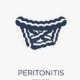

Imp: Peritonitis
Diet: NPO
Activity: CBR
Condition: bad
Please:
1.Iv line fixed
2.CVS q1h
3.POM & COM
4. O2Therapy With nasal 4-6lit/min if o2<90
5. Folly fixed & control I/O
6. CBC, Na, K, BUN, Cr, BS, PT, PTT, INR, Amylase, LFT, UA, ABG
7.Reserve 4 units PC
8.CXR PA
9.ECG
10.Abdominopelvic sonography
11.Abdominal X-rays (upright & supine)
12.Serum NS 1000 cc IV stat
13.Amp Ceftriaxone 1 gr IV bd
14.Vial Metronidazole 500 mg IV / qid
15.Amp Pentazole 40mg iv
16.surgical consultation
شرح حال: پریتونیت یا التهاب و عفونت حفرهی شکمی، یا بر اثر پرفراسیون اعضای درون شکم رخ میده یا براثر اثر تحریکی التهاب اعضای شکمی (مانند پانکراس) و یا بصورت خودبخودی در بیماران با آسیت ایجاد میشود. بیمار با تظاهرات تب، درد شکمی، حالت تهوع استفراغ، تندرنس شکمی همراه با ریباند گاردینگ مراجعه میکنند.
✳️تب
✳️درد شکمی
✳️تهوع استفراغ
✳️تندرنس شکمی همراه با ریباند گاردینگ
طیف وسیعی از تشخیص افتراقی بر اساس محل آناتومیک وجود دارد
1️⃣ پانکراتیت
2️⃣ ایسکمی روده و مزانتر
3️⃣ ولولوس
4️⃣ انسداد روده
4️⃣ ایلئوس
5️⃣ کلانژیت
6️⃣ آپاندیسیت
7️⃣ دیورتیکولیت
PID 8️⃣
9️⃣ سیستیت
🔟 پیلونفریت
1️⃣1️⃣ آنوریسم آئورت شکمی
1️⃣2️⃣ هماتوم شکمی
1️⃣3️⃣ گاستروانتریت حاد
DKA 1️⃣4️⃣
1️⃣5️⃣ هرنی
1️⃣6️⃣ التهاب مثل IBD , واسکولیت
تصویری برای این نسخه موجود نیست.